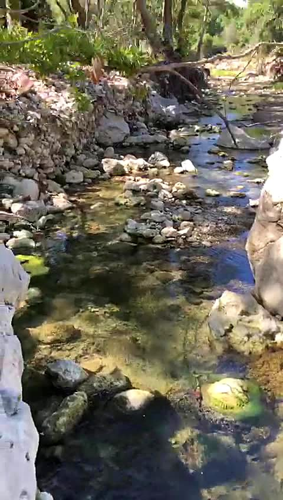
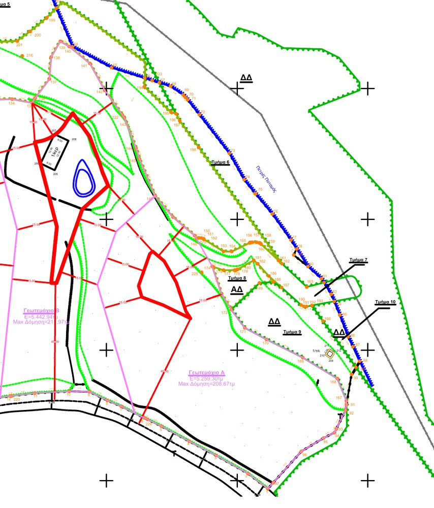

כ-5.3 דונם על גדת נהר זורם ליד רתימנו: מטע אבוקדו חי, ובקשת בנייה שהוגשה לבית עם סופיטה ובריכה.
מדידה 2024 ← רכישה נוטריונית 2025 ← רישום בקדסטר 2026 ← בקשה ב-e-adeies
שבע בבוקר, היום הראשון. כיסא מתקפל בין שורות האבוקדו, קפה שחור, אדים באוויר הקריר. מלמטה עולה קול קבוע של מים: הנהר ער. אחרי הקפה הולכים לאורך השורות, בלי סיבה למהר. המשאבה שואבת מהפטרס והמטע שותה, ומעבר לו — טרסת ההדרים והצבר, וחורש של אלוני ענק על המים ממש.
בצהריים יורדים אל הנהר עצמו, אל בריכה עמוקה בין סלעים בהירים. נכנסים. קר. נשארים. עד שהאור נעשה נחושת וצל האלונים מתארך.

היום הזה עוד לא קרה. הבמה שלו כבר קיימת ורשומה: 5,259.30 מ״ר על נהר פטרס. בתשריט הרשום קוראים לה חלקה Α. אתם עוד תקראו לה אחרת.
זכות הבנייה, 208.67 מ״ר לפי תשריט רשום, כבר תורגמה לבקשה רשמית שמונחת אצל רשות התכנון: בקשה בהליך, עדיין לא היתר. אבל הבית מהסיפור שלמעלה הוא כבר מסמך.
”בית מגורים חדש בן קומה אחת, עם סופיטה ובריכת שחייה“
אין כאן הדמיות. כ-120 עצי אבוקדו גדלים בשורות, מושקים במשאבה ששואבת מהפטרס. את הטרסה ואת האלונים כבר פגשתם בסיפור למעלה.
החלקה נמכרת כשהיא עובדת: מים נכנסים, עצים גדלים. ביום הראשון פשוט מצטרפים אליה.
מקום קונים בעיניים, אבל מחזיקים אותו בניירות. קרקע ביוון נשמעת לישראלים כמו הרפתקה — כאן היא הייתה תהליך, ומהתהליך נשאר תיק שלם, מסמך אחר מסמך.
תשריט טופוגרפי של הנחלה כולה, בידי מודד מוסמך.
חוזה רכישה סופי שנחתם ונרשם אצל נוטריון ברתימנו.
תשריט חלוקה סופי: חמש חלקות, לכל אחת שטח וזכות בנייה משלה.
החלוקה נרשמה. חלקה Α היא נכס עצמאי ורשום — לא חלק ממשהו.
בקשה רשמית במערכת e-adeies, אצל אותו מהנדס אזרחי.

התיק המלא עובר לעורך הדין של הקונה ביום שמתחילים לדבר ברצינות.
את החלקות השכנות מחזיקות ארבע משפחות: שלוש ישראליות, ומשפחה יוונית מרתימנו. בלי שמות; שכנות טובה מתחילה בפרטיות.
ההחלטה שמונחת עכשיו על השולחן שלכם התקבלה כאן, באותה נחלה, כבר ארבע פעמים.
היום הראשון נגמר בגבולות החלקה. לכל הימים הבאים — אלה המרחקים, בקו אווירי.
חלקה עצמאית רשומה בקדסטר היווני; זכות בנייה של 208.67 מ״ר בתשריט רשום; בקשת תכנון שכבר נעה במערכת; 45 מטר חזית לדרך סלולה ושקטה, עם חשמל וטלפון לאורכה; נהר בגבול החלקה ומשאבה פעילה שמחזיקה מטע עובד. נשאר רק לאמת, ובשביל זה בדיוק בנינו את התיק.
ולשתי השאלות הישירות — כמה, ולמה אנחנו מוכרים — עונים בשיחה הראשונה.
שיחה אחת איתנו — המשפחה שמוכרת, ומי שמכיר את התיק מקצה לקצה. אחר כך, אם תרצו, בוקר על החלקה: קפה מול הנהר, מסמכים על השולחן.
ומכאן: שיחה ← התיק המלא אצל עורך הדין שלכם ← ביקור על הקרקע. עלויות ומסים של צד הקונה — נפרטים בשיחה הראשונה.
· הקישורים מתחברים לפני הפרסום ·
הדף נכתב מטעם המשפחה שמוכרת את החלקה, משפחה ישראלית מקבוצת הרכישה. העובדות המשפטיות והתכנוניות נשענות על מסמכים; את השטח תיארנו כפי שצילמנו וראינו אותו. מה שעוד אינו ודאי — ובראשו בקשת הבנייה — כתוב כמו שהוא: בקשה בהליך, לא היתר. המרחקים נמדדו בקו אווירי, וכל המסמכים יועמדו לבדיקת עורך דין מטעם הקונה. כתבנו כמו שהיינו רוצים שיכתבו לנו.
חלקה Α · קמאנוס · אגיוס קונסטנטינוס, נפת רתימנו, כרתים · עודכן אוגוסט 2026